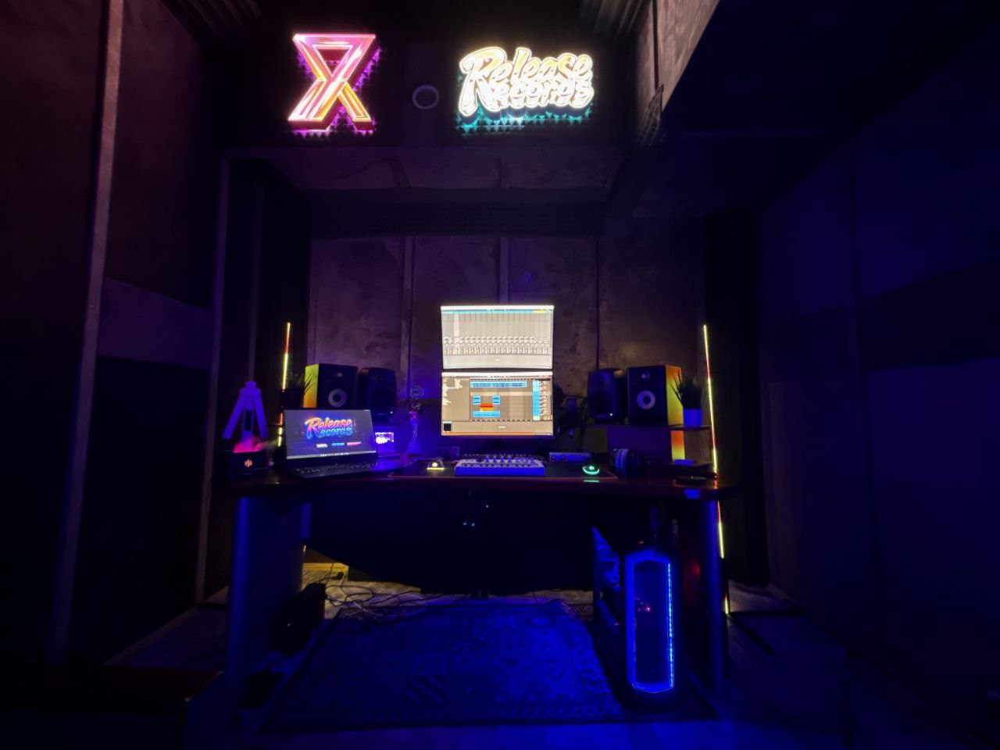

Записать рэп
Текст, минус, куплеты, припев, даблы. Поможем с подачей и дублями, чтобы голос не звучал как черновик из подъезда.
НаписатьМосква · Смольная 15 · м. Водный стадион
Камерная студия для первого трека, подарочной песни и релиза: запишем голос, поможем с подачей, сведём и подготовим финал.

слушать
Один реальный аудио-слот оставляем как центр сайта. Никаких фейковых кейсов: если звук меняется — меняем файл, а не сочиняем легенду.
выбор сессии
Текст, минус, куплеты, припев, даблы. Поможем с подачей и дублями, чтобы голос не звучал как черновик из подъезда.
НаписатьЧистая запись голоса, комфорт у микрофона, монтаж удачных дублей и подготовка к сведению.
НаписатьДля дня рождения, признания или личной истории. Без сиропа и кринжа: собираем идею, форму, голос и финальный файл.
НаписатьПосадка вокала в бит, пространство, эффекты, громкость и финальная версия для телефона, машины и площадок.
Написать
control room
первый раз
Если ты впервые в студии — нормально. Инженер ведёт по дублям, подаче и записи. На выходе нужен не героизм, а версия, которую не стыдно отправить.
как проходит
Текст, минус желательно WAV, референсы и понимание задачи. Если есть только идея — тоже можно начать.
Это один из основных сценариев. Студия помогает спокойно пройти запись, а не изображать экзамен.
Да, если есть окно. Лучше сразу написать срок и что нужно получить на выходе.
booking
Позвони или напиши: что записываем, когда нужно, есть ли текст/минус/идея.